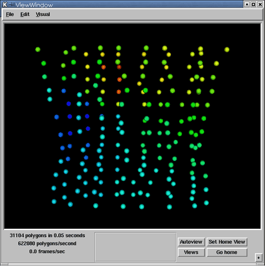
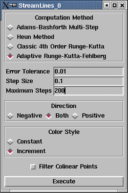
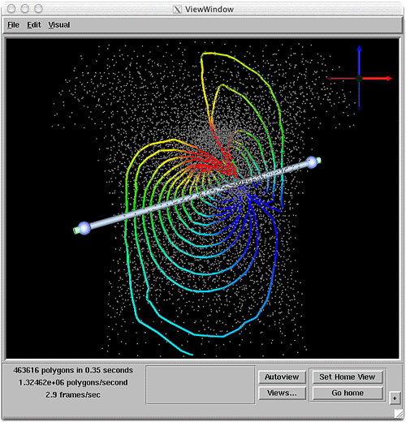

|
Chapter Overview Chapters 1 and 2 demonstrate the construction of SCIRun networks to visualize the geometry and data values in a Field. This chapter explores additional visualization techniques, and examines filter modules that receive a Field as input, and output a newly derived Field. Rather than building one net to introduce these modules, several nets will be constructed. Each net will describe a single visualization technique. This chapter is divided into three sections, one for each method. First, perform a boundary extraction. The FieldBoundary module extracts a boundary surface from a volume. For example, given a TetVolMesh, the module extracts the boundary faces and outputs a TriSurfMesh. Create a net using the FieldBoundary module (SCIRun/Fields/FieldBoundary):
The net should look like Figure 3.1. Save this net as 3A.net, it will be used in Chapter 4 of this tutorial, Putting the nets together.
Next, interpolate data values from one Field to another Field. This section, demonstrates how to load two datasets:
Now that the datasets are loaded, create a new Field by interpolating the electrode positions and voltage values. Interpolation is the means by which we calculate the value at a certain point by using the known values at surrounding points. For each electrode, we must find the corresponding voltage value from the volume Field. The DirectInterpolate module implements this algorithm (SCIRun/Fields/DirectInterpolate). The following modules are needed to run the DirectInterpolate net:
These modules should be hooked together as shown in Figure 3.3. NOTE: be sure to set the Node Scale in the ShowField UI to be at least 4-6, and hit the Autoview button in the ViewWindow.
Also, make sure to rotate the image in the ViewWindow downward as it appears in Figure 3.4. The FieldReader on the left should read in the utahtorso-lowres-voltage.tvd.fld input file, and the FieldReader on the right should read in the utahtorso-lowres-electrodes.pcd.fld input file. 
Streamline advection is the last visualization technique explored in this chapter. The StreamLines module visualizes vector Fields by integrating curves through a gradient vector flow Field. Generate the input vector Field by using the Gradient module (SCIRun/Fields/Gradient) in order to compute the gradient of the utahtorso-lowres-voltage.tvd.fld. The SampleField module will generate a sample distribution of StreamLine seed points. SampleField generates samples from any type of Field input and outputs the samples as a PointCloud Field. The following modules are needed to run the StreamLines net:
These modules should be hooked together as shown in Figure 3.5.
The SampleField module can generate samples randomly or the user can select samples using a 3D widget. For Streamline visualization, use a 3D rake widget for distributing seed points. The user can interactively position the rake of seed points within the volume:
To attach scalar data values to the StreamLine nodes, set the following options:
The StreamLines module works by integrating the seed points through the vector Field. A fifth order integration method is used; the Runge-Kutta-Fehlberg algorithm. Three parameters must be to run this algorithm: Error Tolerance, Step Size, and a Maximum Number of Steps. Set these three parameters, respectively, to 0.01, 0.1, and 200. The other UI options can remain at their default settings. 
Save this net as 3C.net. lt will be used in Chapter 4 of this tutorial, Putting the nets together. The rake is one of many widgets used in SCIRun. Widgets are graphical elements in the Viewer that allow the user to interactively control features of the display. The SCIRun widgets have similar visual characteristics, but manipulate different aspects of the display, as detailed in the User's Guide 6.5, Control Widgets. Control widgets by:
Network execution and data dependence There are several ways to execute a SCIRun network that has not fired. In the StreamLines network:
These actions will execute the selected module, and any modules that depend on that module.
After executing the StreamLines network, an image like Figure 3.8 should appear in the ViewWindow. The rake widget will appear as a gray bar with spheres at the ends. The user's image may be somewhat different than Figure 3.8, but the user should see the rake and colored streamlines. If the streamlines do not appear, the user may need to check the object list and turn on the Edges. 
In the next chapter, the nets will be merged into a single,
larger network
that performs concurrent visualizations.
|